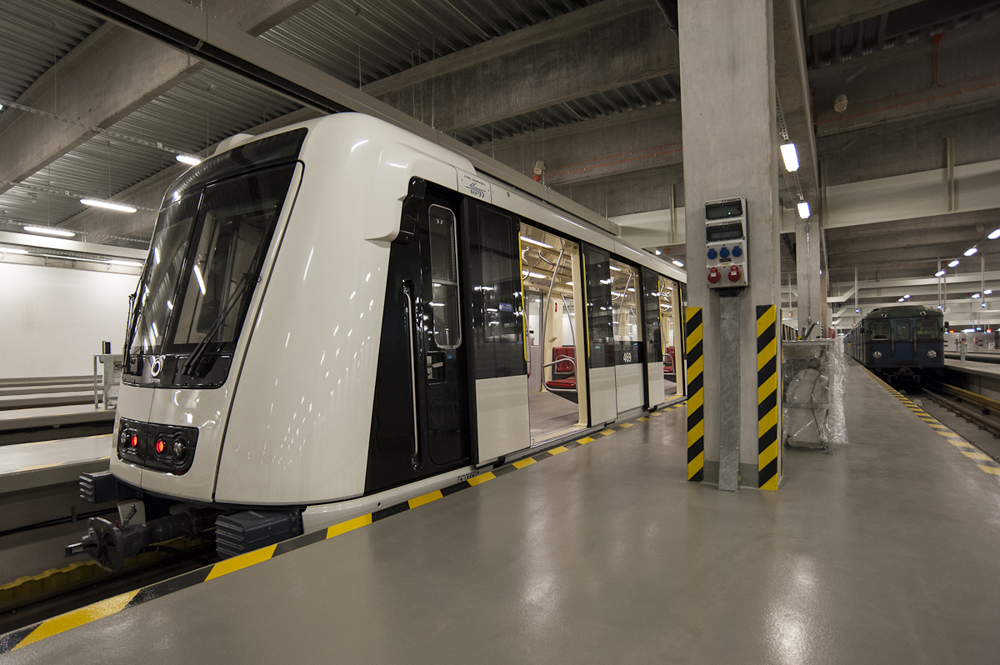
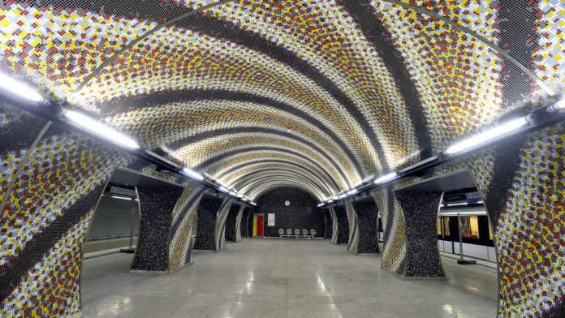
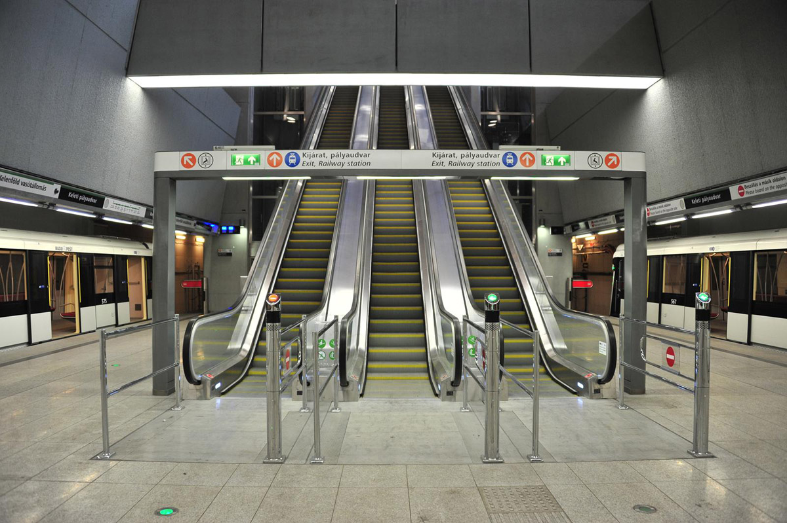

Az M4-es metróvonal
Az M4-es metróvonal (eredeti nevén Dél-Buda–Rákospalota (DBR) metróvonal, informálisan zöld metró) a budapesti metró negyedik vonala a Kelenföld vasútállomás és a Keleti pályaudvar között.
A M4-es metróvonal építésének ötletét a Budapest és környéke Közlekedésfejlesztési Terve 1972-ben fogalmazta meg. 1976-ban határoztak arról, hogy az építést 1978-ra előkészítik. A következő évtizedben a beruházást pénzügyi és ütemezési szempontból többször is elhalasztották. 1991-ben a Fővárosi Közgyűlés döntött a tenderkiíráshoz szükséges dokumentációk elkészítéséről. 1996-ban elkészült a megvalósíthatósági tanulmány, a költségek megosztásában pedig 1998-ban a kormány döntött. 1998 novemberében a kormány kivonult a beruházás mögül. A szerződés végül 2003. év végén került aláírásra.
Története

Az M4-es metróvonal építésének ötlete 1972-ben merült fel. Ekkor még Budafokot kötötte volna össze az Astoriával, keresztezve a Kálvin teret. Később a Blaha Lujza téri végállomás is szóba került. Egy 1976-os UVATERV-tanulmány térképe szerint Dél-Budán két metróvonallal számoltak volna. A 4-es metró az ekkori tervek szerint valahol Albertfalva és Budafok határánál indult volna, majd onnan észak felé haladva közös állomása lett volna az M5-ös metróval a Móricz Zsigmond körtéren. Ezután kelet felé haladva a mai nyomvonalon keresztezte a terv a Dunát, és a Keleti pályaudvarig a ma ismert vonalon halad. Ezután Zugló felé fordulva halad a Bosnyák térig, majd onnan északkeleti irányba haladva az akkor még nem létező újpalotai lakótelepen át valahol a város határában, a Szilas-patak mellett ért volna véget (egy ide tervezett új építésű városközpontban), méghozzá az M3-as metróvonallal közös, járműteleppel ellátott "Rákospalota, új városközpont" nevű végállomáson.
Finanszírozása
2004-ben a budapesti városvezetés az 1996-os tanulmány alapján vágott bele az építkezésbe, amelyhez állami támogatást remélt az első Gyurcsány-kormánytól. A kormány azonban csak akkora támogatást hagyott jóvá, amennyi az európai uniós pénzügyi forrásokhoz és Budapest saját erejéhez még szükséges. Ezzel azonban a főváros szinte teljes fejlesztési erejét az M4-es metró emészti fel az elkövetkező években, vagyis a metró miatt maradnak majd el fővárosi beruházások.
Az EU-s támogatás elnyeréséhez a megvalósíthatósági tanulmányt is újra kellett írni. Ekkor kiderült, hogy az eredeti megtérülési mutatók nem tarthatók. A mutatók javítása érdekében 2007 őszén több kiegészítő létesítményt elhagytak a tervből.[8] 2008 májusában a metró újraszámolt megtérülési mutatóit a Fővárosi Önkormányzat még mindig nem kívánta nyilvánosságra hozni, a kérdésben így a bíróság dönt majd.
2008 decemberében a Városi és Elővárosi Közlekedési Egyesület úgy nyilatkozott, hogy a nem sokkal korábban elkészült forgalmi hatásvizsgálatban és pénzügyi értékelésben trükkökkel próbálják az M4-es metrót gazdaságilag megtérülő projektként feltüntetni: így például a reálisnál nagyobb átlagsebességgel számoltak; a 7-es busz menetidejénél az útfelújítások, építkezések idején, csúcsforgalomban mért adatokat vették alapul; a P+R parkolókból a metróra átszálló utasokat is számításba vették, noha a parkolók építése a jelenlegi tervekben nem szerepel; továbbá az 1-es villamos meghosszabbításából eredő nyereséget is alapul vették, miközben a meghosszabbítás költségével nem kalkuláltak. A DBR Metró Projektigazgatóság cáfolta a felmerült ellenvetéseket.
További szakaszok

A 4-es metró az eredeti tervek szerint a Kelenföld vasútállomástól (az Etele tértől) a Bosnyák térig tartott volna, de a 2014-es átadásra csak a Keleti pályaudvarig készült el, mely döntés mögött politikai szándékok húzódtak, miután a fennmaradó szakasz megépítésére nem kívántak semmilyen forrást fordítani.[49] A Bosnyák térig tartó második szakasz megépítését – a tervezett bővítés első ütemeként – emiatt bizonytalan időre elnapolták. A második ütem az Etele tértől Gazdagrét–Madárhegy térségig bővítené a vonalat, távlati tervek szintjén pedig a metró Újpalotáig tartó kivezetése is napirenden van. Ezeken kívül szóba került egy esetleges Budafok városközpont felé tartó leágazás is.